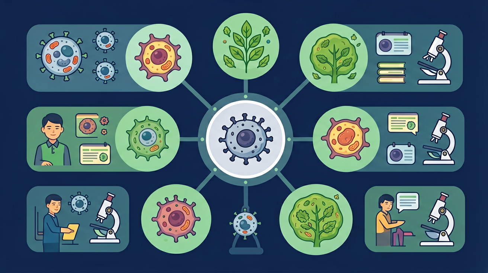

Gallery
v0.1.0 · skill v7.14.0
为什么流感一人得全班中招,骨折却不会传染?
And(已知):我们知道微生物无处不在,生活中有很多疾病--有些能传给别人,有些不能。
But(矛盾):但为什么流感一个人得了全班容易中招,而骨折却不会传染?为什么有些微生物让人生病,有些不会?
Therefore(解决):所以我们要搞清楚传染病流行的三个环节和人体的免疫防线,学会科学预防传染病。
🎯 真实情境:2020年新冠疫情期间,学校停课、全民戴口罩、研发疫苗--这些措施背后的科学原理是什么?学完本课你就能回答!

先选一个你关心的问题。后面的例子、提示和 AI 学伴都会围绕这个问题来帮你推进。
选择或输入后,本课会围绕你的问题展开。
以下哪些属于传染病?选出所有正确答案。
诊断反馈:判断是否为传染病的关键标准--1由病原体引起 2能在个体间传播。流感(病毒)和新冠(病毒)符合;高血压(代谢)和近视(结构)不符合。
💡 如果你错选了B/D:说明你可能把"常见病"等同于"传染病",请记住"能传播"是关键区分点。
传染病是由病原体(细菌、病毒等)引起的,能在人与人或人与动物之间传播的疾病。
病原体能从患者体内排出,经一定途径传给他人
在一定条件下可在人群中广泛传播,短时间内大量感染
✏️ 马上练一题:贫血能传染吗?为什么?
三个环节缺一不可,切断任何一个就能阻止传播。
能散播病原体的人或动物
空气、飞沫、水、接触、虫媒等
缺乏免疫力的人群
例:流感 → 传染源(流感患者)→ 传播途径(飞沫)→ 易感人群(老人、儿童)
蚊子叮咬传播疟疾,属于哪种传播途径?
正确答案 C。蚊虫作为生物媒介在宿主间传递病原体,属于虫媒传播。
💡 诊断:如果选了A/D,说明你混淆了"传播介质"(空气/飞沫)与"传播媒介"(生物体)的区别。
隔离患者、扑杀患病动物、治疗携带者
消毒、通风、戴口罩、保持社交距离
接种疫苗、锻炼身体、增强免疫力
✏️ 马上练一题:"加强体育锻炼"属于哪种预防措施?
点击按钮模拟传染病在人群中的传播,观察阻断措施的效果。
点击"开始传播"观察病原体如何在人群中扩散。
生来就有,不针对特定病原体
后天获得,针对特定病原体
✏️ 马上练一题:白细胞吞噬入侵细菌属于哪种免疫?
疫苗是经过处理的减毒或灭活病原体,接种后触发特异性免疫应答:
💉 疫苗(抗原)→ 🧬 免疫细胞识别 → 🔬 产生抗体 → 📝 形成免疫记忆
再次感染时 → 记忆细胞快速增殖 → 大量抗体迅速消灭病原体
关键:疫苗本身不致病,但能让免疫系统"记住"该病原体。
传染源是能散播病原体的人或动物(如流感患者),病原体是引起疾病的微生物(如流感病毒)。
锻炼身体是增强自身免疫力,属于保护易感人群。切断传播途径指的是消毒、通风等措施。
非特异性免疫包括两道防线:第一道(皮肤和黏膜)+ 第二道(杀菌物质和吞噬细胞),不只是皮肤!
疫苗接种后需要一段时间(通常1-2周)让免疫系统产生足够抗体和记忆细胞。
下列疾病中,属于传染病的是:
肺结核由结核杆菌引起，可经飞沫传播，是传染病。其他三项不满足“病原体引起+能传播”两个条件。
"给教室开窗通风"属于预防传染病的哪个环节?
通风是减少空气中病原体浓度，属于切断传播途径。记住：任何“消灭/减少病原体在环境中的存在”的措施都属于切断传播途径。
某校爆发流感,请设计一套包含三个环节的防控方案:
参考方案:
1 控制传染源:患病学生居家隔离至康复
2 切断传播途径:教室消毒通风、师生戴口罩
3 保护易感人群:通知易感学生接种流感疫苗、加强营养锻炼
探索免疫应答中蛋白质(抗体)的合成过程。
某地出现登革热病例(蚊虫传播),以下措施中不属于"切断传播途径"的是:
答案 C。隔离患者是针对"传染源"的措施,而非切断传播途径。A/B/D 都是针对蚊虫这一传播媒介的措施。
💡 诊断:如果选错,说明你混淆了"传染源"(病人)和"传播途径"(蚊虫)的区别。请回看三环节模块。
传染病流行是病原体、传播途径和易感人群三者共同作用的结果。
从病原体视角看:它"需要"宿主才能存活。从人体视角看:免疫系统是数亿年进化出的"军事防御"。
传染病患者需要隔离治疗--这不仅是医学问题,也涉及心理健康和社会支持。
新冠疫情中的每一项防控措施(核酸检测、居家隔离、接种疫苗)都对应三环节的某个断点。
你觉得自己对哪个环节理解最模糊?是传播途径的分类,还是免疫类型的区分?
✅ 传染病两大特点:传染性和流行性
✅ 流行三环节:传染源 → 传播途径 → 易感人群
✅ 预防三原则:控制传染源、切断传播途径、保护易感人群
✅ 免疫分为非特异性免疫(先天)和特异性免疫(后天)
✅ 疫苗利用免疫记忆原理预防特定传染病